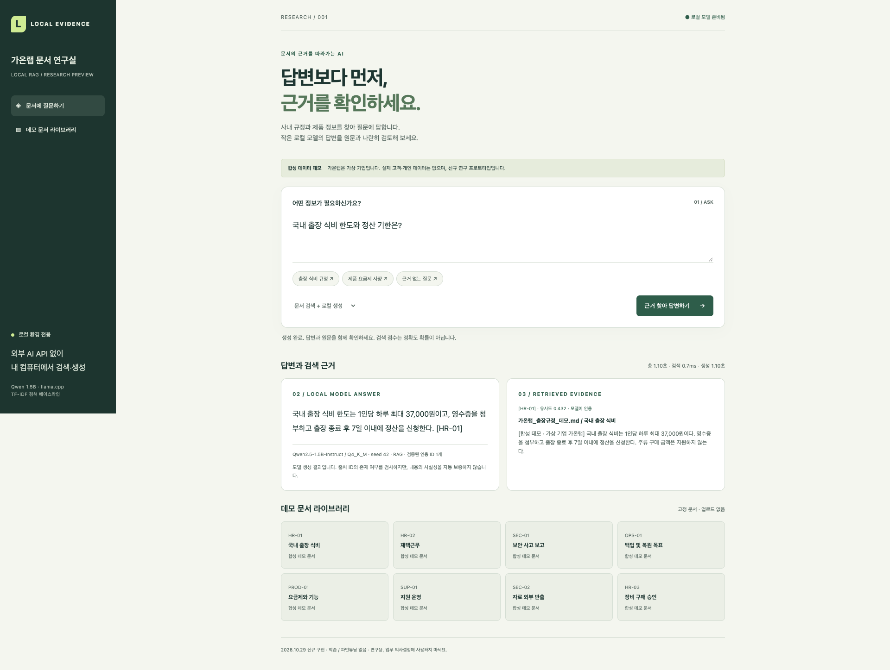
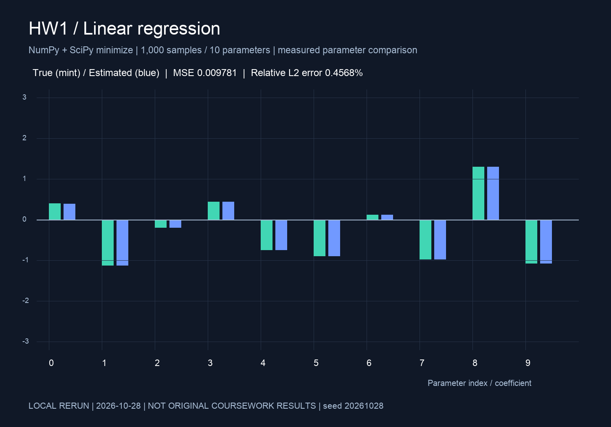
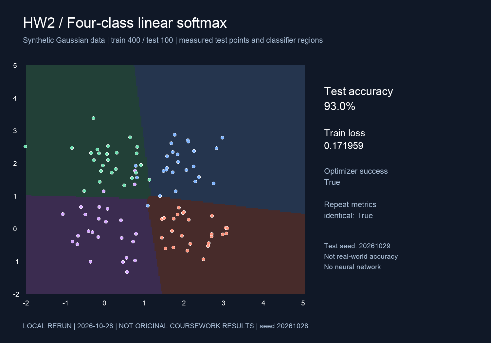

AI ENGINEERING
사내 문서 활용을 위한 로컬 LLM 기반 지식 검색·질의응답
흩어진 사내 규정에서 필요한 답을 찾고, 그 근거까지 확인할 수 있을까?
01 · 업무 문제와 목표
직원은 출장 정산이나 장비 분실 절차를 확인하려고 규정·매뉴얼을 오가야 합니다. 문서가 분산되어 있으면 답을 찾는 일과 최신 근거를 확인하는 일이 분리됩니다.
조직 정책이나 데이터 처리 요건에 따라 내부 자료의 외부 AI 전송이 제한될 수 있습니다. 이에 문서를 로컬에 두고 검색·답변·근거 확인을 연결하는 대안을 검토했습니다. 고객 수요 조사나 실제 기업 도입이 아닌, 업무 시나리오를 정의한 연구입니다.
02 · 설계와 구현
질문 → 문서 검색 → 로컬 모델 생성 → 답변·원문·인용 경고의 한 흐름을 FastAPI와 웹 UI로 구현했습니다. 정해진 합성 문서 7개·8절을 사용하며, 검색 없이 생성하는 비교 모드와 응답 시간 표시를 제공합니다.
답을 찾지 못하면 확인 불가를 안내하도록 프롬프트를 구성하고, 모델이 만든 인용 ID를 실제 검색 절과 대조합니다. 잘못된 답변을 성공 사례로 바꾸지 않고 경고와 원문을 남깁니다.
작고 재현 가능한 검색 기준선
문자 2–4 gram TF-IDF·cosine·top-3를 선택해 임베딩 API나 벡터 DB 없이 검색 과정을 재현했습니다. 단어 표현이 크게 달라지는 질문에는 한계가 있어, dense 검색과 재순위화는 후속 비교 대상으로 남겼습니다.
로컬 자원 안에서 실제 추론
기존 llama.cpp / Metal과 공식 Qwen2.5-1.5B-Instruct Q4_K_M을 연결했습니다. 약 1.12GB의 경량 모델로 다운로드·메모리 부담을 제한하는 선택이며, 대형 모델 대비 품질 우위를 검증한 것은 아닙니다. 자체 학습·파인튜닝 없이 추론을 구현했습니다.
03 · 질문에서 근거 확인까지
가상 기업 ‘가온랩’의 합성 출장 규정 · 저장된 실제 평가 응답
- 직원의 질문
국내 출장 식비 한도와 정산 기한은?
- 검색된 원문 · HR-01
[합성 데모 · 가상 기업 가온랩] 국내 출장 식비는 1인당 하루 최대 37,000원이다. 영수증을 첨부하고 출장 종료 후 7일 이내에 정산을 신청한다. 주류 구매 금액은 지원하지 않는다.
- 실제 모델 답변
국내 출장 식비 한도는 1인당 하루 최대 37,000원이고, 영수증을 첨부하고 출장 종료 후 7일 이내에 정산을 신청한다. [HR-01]
- 인용 확인
[HR-01]이 제공한 검색 절 ID와 일치함을 확인했습니다. ID 일치 검사는 답변의 의미적 정확성까지 보장하지 않으므로 원문을 함께 보여 줍니다.

04 · 무엇을 확인했나
내용·보류 휴리스틱 통과
답변 가능 문항 인용은 5/7
모델 로드 제외 · 단일 사용자
2026.10.29 · Apple M4 / RAM 32GiB · 고정 합성 질문 10개(답변 가능 7·불가 3), 두 조건에서 문항당 1회씩 총 20회 생성. 동일 모델·프롬프트·seed 42·temperature 0에서 검색 문맥만 변경했습니다. 구현 에이전트의 원문 검토이며 독립 인간평가가 아닙니다. 작은 고정 세트의 개발 검증이지 일반 정확도 100%나 부하 벤치마크가 아닙니다.
05 · 오류에서 정한 다음 과제
노트북 분실(Q03)과 장애 응답(Q06)은 내용 조건을 충족했지만 인용이 틀렸습니다. 분실 답변은 SEC-01 대신 잘못된 토큰을, 장애 답변은 SUP-01 대신 HR-01을 출력했습니다. 정답처럼 보이는 문장과 올바른 근거는 별도로 평가해야 한다는 결과입니다.
다음 단계는 구조화 인용 출력과 주장–근거 의미 검증, 미공개 패러프레이즈 질문·문서 내 공격 지시 테스트, 검색 방식·모델 크기별 비교입니다. 이번 구현에 포함된 기능과 구분합니다.
로컬 실행의 경계와 도입 전 조건
앱·엔진은 127.0.0.1에만 바인딩했습니다. 동일 macOS sandbox의 직접 외부 IPv4/IPv6 연결은 차단되고 로컬 HTTP는 성공한 범위까지 확인했습니다. 시스템 전체 보안 감사나 기업 보안 인증은 아닙니다.
미구현: 사용자 인증·역할별 문서 권한, 문서 버전·갱신·삭제 관리, 감사로그, 별도 저장 암호화. 실제 도입 전에는 이러한 통제와 조직별 데이터 처리 요건 검토가 필요합니다. 실제 고객 문서·운영 연동·원격 공개는 하지 않았습니다.
기초 역량 · 딥러닝 과제, 음성 인식, 이미지 실험
2023.10 딥러닝 교과 실습과 보존된 NumPy·SciPy 회귀/softmax 과제, 2026.03–10 MLX Whisper 분할 전사·시간축 복원 구현, 이미지 LoRA 데이터·캡션 정제 기록은 이 신규 문서 RAG와 구분합니다.
GitHub · 공개 과제 ↗
